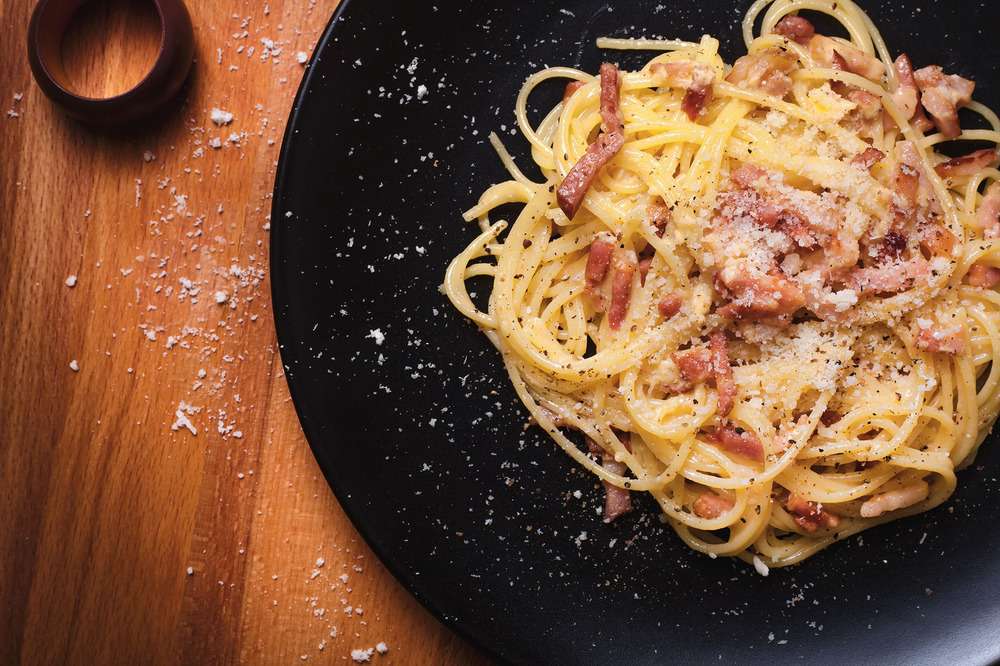

Pasta Carbonara
A classic Italian dish made with spaghetti, eggs, cheese, and pancetta or guanciale.
Ingredients:
- 200g spaghetti
- 2 large eggs
- 50g Pecorino Romano cheese, grated
- 50g Parmesan cheese, grated
- 100g pancetta or guanciale, diced
- Salt and black pepper to taste
Instructions:
- Bring a large pot of salted water to a boil. Cook spaghetti according to package instructions until al dente.
- While pasta is cooking, whisk together eggs, grated cheeses, and a pinch of black pepper in a bowl.
- In a skillet, cook diced pancetta or guanciale over medium heat until crispy.
- Drain cooked spaghetti, reserving some pasta water. Immediately add hot spaghetti to the skillet with pancetta, tossing to coat.
- Remove skillet from heat. Quickly pour in the egg and cheese mixture, tossing continuously to create a creamy sauce. Add reserved pasta water as needed to thin out the sauce.
- Serve immediately with additional grated cheese and black pepper.
Chocolate Chip Cookies
Soft and chewy cookies loaded with chocolate chips, perfect for any occasion.
Ingredients:
- 1 cup (230g) unsalted butter, softened
- 1 cup (200g) granulated sugar
- 1 cup (220g) packed light brown sugar
- 2 large eggs
- 1 teaspoon vanilla extract
- 3 cups (360g) all-purpose flour
- 1 teaspoon baking soda
- 1/2 teaspoon salt
- 2 cups (340g) semisweet chocolate chips
Instructions:
- Preheat oven to 350°F (175°C). Line baking sheets with parchment paper.
- In a large bowl, cream together butter, granulated sugar, and brown sugar until light and fluffy. Beat in eggs one at a time, then stir in vanilla.
- Combine flour, baking soda, and salt; gradually stir into the creamed mixture.
- Fold in chocolate chips.
- Drop by rounded spoonfuls onto prepared baking sheets.
- Bake for 10 to 12 minutes in preheated oven, or until edges are golden brown. Allow cookies to cool on baking sheet for 5 minutes before transferring to a wire rack to cool completely.
Grilled BBQ Chicken
Juicy chicken marinated in BBQ sauce and grilled to perfection.
Ingredients:
- 4 boneless, skinless chicken breasts
- 1 cup (240ml) BBQ sauce
- 1/4 cup (60ml) olive oil
- 1 tablespoon honey
- 1 teaspoon paprika
- 1/2 teaspoon garlic powder
- Salt and black pepper to taste
Instructions:
- In a bowl, whisk together BBQ sauce, olive oil, honey, paprika, garlic powder, salt, and black pepper.
- Place chicken breasts in a resealable plastic bag or shallow dish. Pour marinade over chicken, turning to coat. Seal or cover and refrigerate for at least 1 hour (or up to 24 hours).
- Preheat grill to medium-high heat. Oil the grill grate.
- Remove chicken from marinade, shaking off excess. Discard remaining marinade.
- Grill chicken for 6 to 7 minutes per side, or until juices run clear and internal temperature reaches 165°F (75°C).
- Remove from grill and let rest for a few minutes before serving.